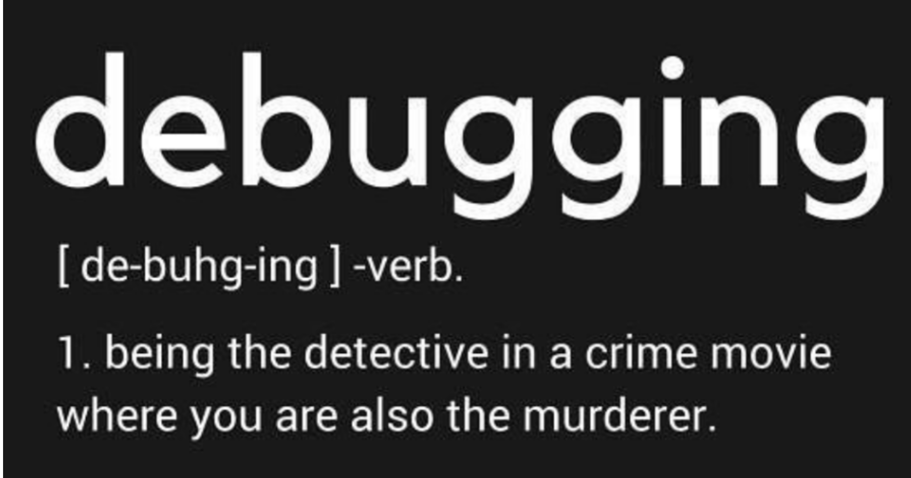

👋 Hi there
I am Bernardo, an aeronautical engineer with a BSc in Aeronautical Engineering and a MSc in Data Science. My passion lies in both coding and engineering. I am from Zurich 🇨🇭 and have over seven years of experience working as an aeronautical engineer and about three years as a data scientist.
I would like to invite you go through my CV and blog to learn more about me 🤓. Please don’t hesitate to contact me if you have any questions or would like to collaborate on a project 🤝.
👨🏽💻 Experience
Explore my journey through various industries and roles in the world of data science and beyond! From predictive maintenance in the railway sector 🚂🚂🚂, to crafting models for turnover prediction in the food industry 🍔🍕🍝 and upsell models banking 💵💰💳, my experiences have been diverse and impactful. Delve into my work with Gaussian Mixture Models, Multi-Output Regression, OCR tools, and more. For a detailed account of my professional voyage, head to Section CV.
🏝️ 🏙️ 💻 📺 Hobbies
I love to travel 🛩️ 🚂 ⛰️ 🏝️ 🏙️ to code 💻 and binge watch 📺 in my free time. In particular I discovered a passion for web development and this blog 🤓😎.
💻 Tech Stack:


🏆 GitHub Trophies

🧐 Wisdom of the Day

🙌🏽 Farewell message
see you soon